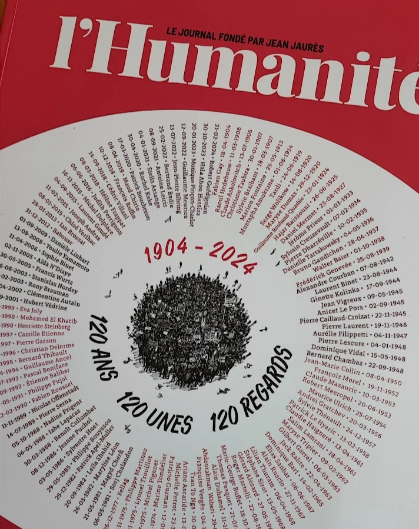
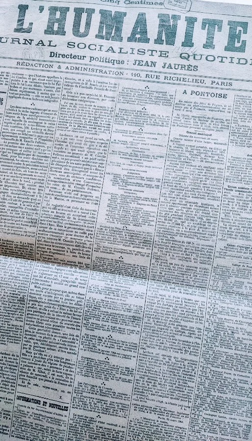
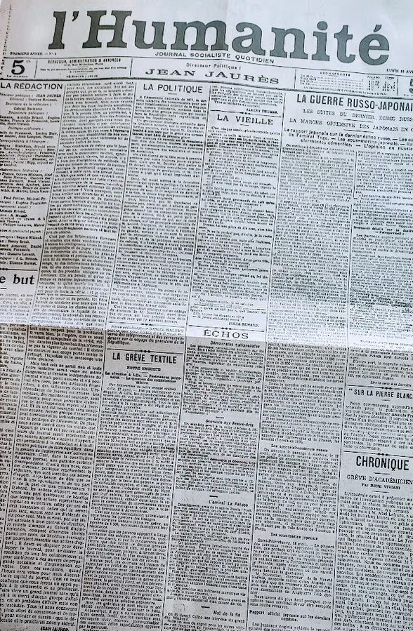

Anniversaire
L’Humanité fête cent vingt ans
Date indiquée par Facebook · 18 avril 2024
Repères éditoriaux
Du 18 avril 1904 au 18 avril 2024, cent vingt ans d’histoire de L’Humanité. Nous avons salué cet anniversaire avec le numéro spécial et des unes conservées dans la publication.
Texte conservé avec la publication
18 avril 1904 - 18 avril 2024
120 ans !
Bon anniversaire !
Longue vie à l'Humanité !



Sources
Archive rouge · export Facebook · AR-0002-FB-01420
À lire aussi · À Châteaubriant, l’hommage du 22 octobre aux fusillés · Le lien d’origine